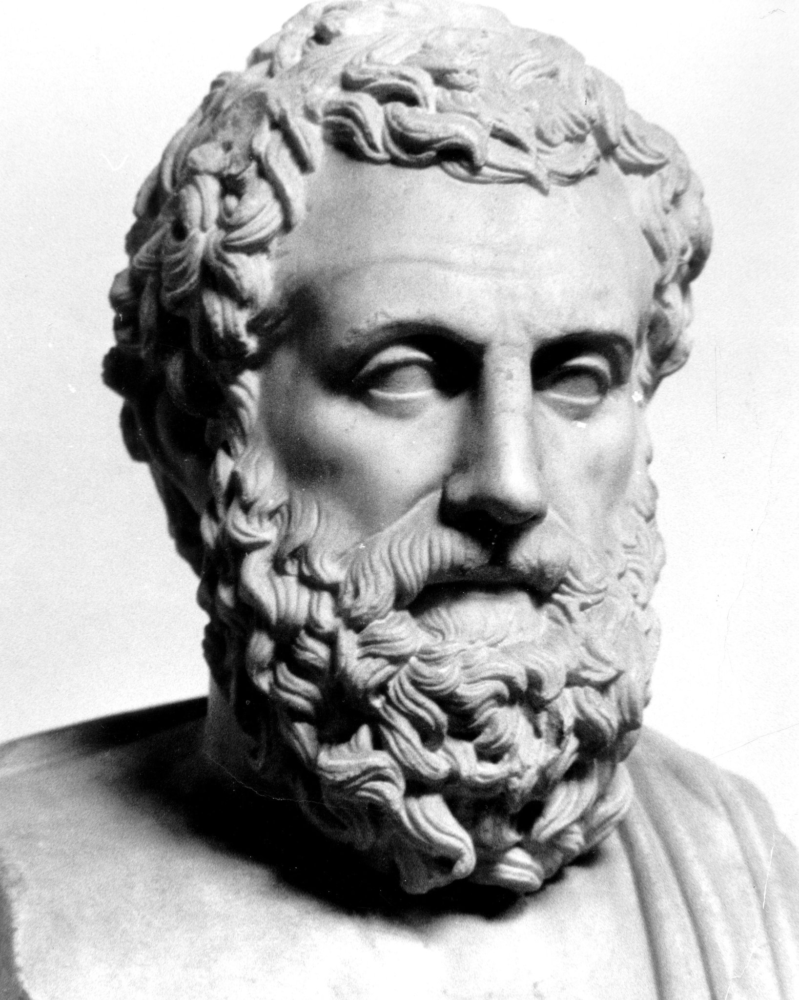
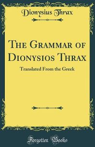
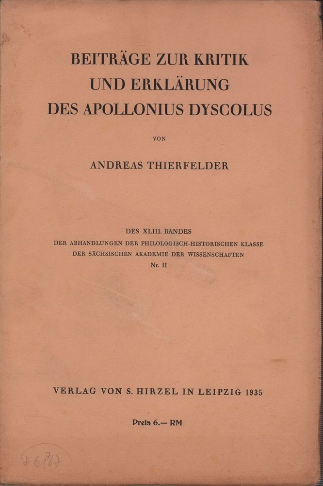

Horistics Laying The Groundwork On The Very Basics Of Grammar Om det helt grundlæggende i grammatik |
Those Danes who will read this book, not only do they stand to improve their English significantly, but they will also gain a deeper understanding of what a language really is.
On the other hand, those readers who study Danish will see their learning curve get substantially steeper, thus speeding up the process of learning the language.
First off, let us distinguish between the what and the how.
Let us say we intend to embark on a study of a human organ, say the heart. The dialectical way to go about it is to first (a)define the heart, the what, and then (b)study it, the how, that is how the heart works and to what end.
Our being able to formulate a valid definition does not mean we know the inner workings of the concept defined.
The definition of the heart might be a couple of lines long but its inner workings are millions of lines long.
However, despite the huge difference in the quantity of text between the what and the how, they are equally important, especially when the concept defined does not have a visual representation like, for example, Justice.
The definition serves to bring into sharp focus the object of our study. If our definition is wrong, we will end up studying some other concept instead. If, for example, our definition of Justice were really the definition of punishment, then we would be studying punishment instead of Justice. Therefore, the stakes involved in formulating a valid definition are really high.
In this book we are going to talk about and study in depth the grammar of adverb clauses, both in English and Danish, focusing on the similarities and differences between the 2 languages with respect to them, that is to adverb clauses.
 I denne bog skal vi tale om og dybtstudere grammatikken i adverbialsætninger, både på engelsk og dansk, med fokus på lighederne og forskellene mellem de 2 sprog med hensyn til dem, det vil sige adverbialsætninger.
I denne bog skal vi tale om og dybtstudere grammatikken i adverbialsætninger, både på engelsk og dansk, med fokus på lighederne og forskellene mellem de 2 sprog med hensyn til dem, det vil sige adverbialsætninger.
But if we are to be successful in our endeavour, we had better consider first a number of issues before we get to the point of actually studying adverb clauses.
However, let it not escape us that studying grammar means studying language as well. It makes a lot of sense, then, to start by defining language and grammar, for it would not serve us well if we started to study adverb clauses without having a clue about the nature of grammar and language, which are of course concepts.
But even before we define grammar and language, shouldn't we define, well, the terms concept and definition?
And, what about our methodology?
The methodology we are going to follow in writing this book is based on Dialectics and Horistics.
Would it not then be a good idea to start by first defining Dialectics and Horistics instead?
Let us do just that.
Starting, then, in logical order, that is from top to bottom, we are going to define (a)definition, (b)concept, (c)dialectics, (d)horistics, (e)language, and (f)grammar.
def. 1 A definition is a set of properties which exclusively identifies a unique concept.
(Isidoros Parlamas 1980)
For a statement to qualify as a definition, it must fulfill a number or requirements, one of which is that only 1 unique concept can fit into it.
def. 2 A concept is a representation of a given definition. (Isidoros Parlamas 1980)
For instance, if we define the word "horse," the way opens to consider different reprentations of the term defined. We can think of the concept of (a)a real horse, the concept of (b)a horse on a computer screen, the concept of (c)a horse in a physical photo, (d)in a physical painting, the concept of (e)the word "horse" itself et al.
def. 3 Dialectics is asking the right questions and providing the right answers with an eye to uncovering the truth regarding the issue under examination. (Socrates in Plato's Cratylus 390c)
In everyday language, this refers to the ability to think straight or to avoid making mistakes when we think critically. Arriving at a conclusion involves, inevitably, asking questions and providing answers. If we ask the right questions and provide the right answers, we will arrive at the right conclusion, thus reaping benefits; if not, we will arrive at the wrong conclusion, thus suffering the consequences.
def. 4 Horistics is the art of defining. (Isidoros Parlamas 1980)
It should be mentioned at this point that horistics is the cornerstone of dialectics.
Meaningfully, the word horizon has the same origin as the word horistics, from the Greek verb ΟΡΙΖΕΙΝ / ὁρίζειν (horizein), which means to delineate. Each definition has its own horizon or delineation, and it had better not spill over to other horizons of adjacent concepts because, if it does, then our definition is invalid.
Time to define language.
We'd better be careful here not to confuse interaction with language. So, what is language?
def. 5 Language is communication governed by grammar. (Isidoros Parlamas 1980)
What is grammar?
def. 6 Grammar is the set of rules that governs a language. (Isidoros Parlamas 1980)
Now, armed with this set of instrumental definitions of very basic concepts, we are better equipped to proceed further.
But, you will ask, why did we have to go through all those definitions?
Well, the importance of the reason we had to do this cannot be underestimated.
By defining our terms, we open ourselves up to being held accountable for what we say.
Defining one's terms promotes accountability.
Definitions make it easier for nonsense, owned either to ignorance, bad faith, or indulging oneself in malicious manipulation, to be detetcted.
Literally everything that exists, be it animate or inanimate, is, among other things, a concept. Definitions describe concepts. All concepts have at least one representation, be it physical, visual, lexical, or conceptual.
For instance, an apple, a concrete noun, can be represented in 4 objective ways:
- physical (real apples)

- visual (on a screen or in a photo or in a painting):

- lexical (the word): apple
- conceptual (definition): An apple is typically round or oblong fruit with smooth or slightly textured skin. The skin color can vary depending on the variety and can be shades of red, green, yellow, or a combination of those colors. Apples have a firm and juicy flesh and their taste can range from sweet to tart.
But kindness, an abstract noun, can be represented only in 2 objective ways:
- lexical (the word): kindness
- conceptual (definition): def. 7 Kindness is a positive quality or characteristic demonstrated through compassionate and considerate behavior towards others.
The thing to understand here is that (a)since representations of concepts are something and (b)since everything is, among other things, a concept, (c)it follows that representations of concepts are also concepts.
We can therefore refer to (a)the concept of the physical representation of an apple or (b)the concept of the lexical representation of an apple and so on.
Some concepts are universal while others are not. For example, lexical representations, that is words or vocabulary, are not universal because they are language dependent, while conceptual represenations are universal. Indeed, the lexical representation of an  in English is apple, while in Danish is æble; however, the conceptual representation of an apple, that is its definitions, is universal.
in English is apple, while in Danish is æble; however, the conceptual representation of an apple, that is its definitions, is universal.
A language can be broken down into (a)lexicon (words or vocabulary), (b)phonetics (pronunciation) rules, (c)punctuation rules, (d)syntax (word order) rules, and (e)morphology* rules, part of which are periphrases.**
*morphology refers to internal structure and formation of words in a language, which involves, among other things, prefixes, suffixes, inflection, declension, conjugation, and periphrases. In English, we decline nouns, adjectives, and pronouns, and we conjugate verbs. For instance, the subject of verbs in English is indicated by nouns or subject pronouns: example 1 Helen works or she works, but in Spanish, it is indicated by the ending of the verb as the verb is conjugated: Helena trabaja or ella trabaja or trabaja; Helena y Juan trabajan or ellos trabajan or trabajan.
**perifrasis, plural periphrases, is part of morphology and refers to polylexical (multi-worded) forms of Parts of Speech. For example, to be fond of is a periphrasis of to like, but they are both verbs and their meaning is roughly the same. Even though is a periphrasis of although, but they are both conjunctions and their meaning is roughly the same. Periphrases do not always occur in pairs. For example, look forward to does not have a monolexical (single-worded) counterpart.
(f)There are far more concepts than words and (g)each word represents only one concept at a time and (h)each concept has a definition and (i)there is only one valid definition for each concept and (j)there is not a single word which represents only one concept. (Isidoros Parlamas • Applied Dialectics & Horistics)
Let me elaborate on the statement above:
(f)There are far more concepts than words
For every word and in every developed language there are at least 2 concepts associated with it. As an example, let us think of water. How many concepts does water represent? Well, let's see how many of them we can think of off hand.
example 2 I drink 2 liters of water every day. (H2O → uncountable noun)
 Jeg drikker 2 liter vand hver dag.
Jeg drikker 2 liter vand hver dag.
example 3 My eyes water when I see homeless children. (intransitive verb)
 Mine øjne løber i vand, når jeg ser hjemløse børn.
Mine øjne løber i vand, når jeg ser hjemløse børn.
example 4 My mouth waters when I smell fresh fish. (intransitive verb)
 Min mund løber i vand, når jeg lugter frisk fisk.
Min mund løber i vand, når jeg lugter frisk fisk.
example 5 I water my garden once a week. (transitive verb)
 Jeg vander min have en gang om ugen.
Jeg vander min have en gang om ugen.
We see that water represents at least 4 different concepts.
(g)Each word represents only one concept at a time
But even though water represents various concepts, it represents only one concept at a time. As you can see, in each of the 4 sentences above, water represents only one concept. For example, in sentence 1, it represents only H2O.
(h)each concept has a definition
The definition of water in example 1 above is its chemical formula: def. 8 H2O.
The definition of water in example 2 above is def. 9 overflowing of the eyes with tears.
The definition of water in example 3 above is def. 10 the production of an abnormally large amount of saliva in the mouth.
The definition of water in example 4 above is def. 11 providing moisture to plants and/or trees by applying water to the soil.
(i)there is only one valid definition for each concept
Of course, anyone can attempt to define a concept. If, for example, we ask 10 people to define Justice, we will most probably end up with 10 different definitions, of which, most probably, none will be apposite.
Justice, just like all other words, represents more than one concept, but each specific concept of Justice has only one valid definition which is different from the definitions of the other concept(s) of the term.
It takes a lot of training in Dialectics and Horistics to be able to come up with valid definitions.
(j)there is not a single word which represents only one concept
This may sound impossible, but it is true. Even very common words, such as and, represent more than one concept. (this not the same as (f) above)
Let us take a look.
example 5 He ate two peaches and drank one coke.
 Han spiste to ferskner og drak en cola.
Han spiste to ferskner og drak en cola.
Rel. (cummulative relationship • and here conveys the concept of increase or addition)
example 6 George invited Helen to dinner, and he didn't pay for it.
 George inviterede Helen til middag, og han betalte ikke for det.
George inviterede Helen til middag, og han betalte ikke for det.
Rel. (relationship of contrast • and here means but)
example 7 Jill was anxious about her date, and she canceled it.
 Jill var bekymret for sin date, og hun aflyste den.
Jill var bekymret for sin date, og hun aflyste den.
Rel. (aetiology or cause-and-effect relationship • and here means so)
You get the idea...
At this point, it is necessary to define truth.
Most people believe that truth exists only as a word because they feel that its meaning, if it has one, is and will remail elusive for ever.
It turns out, though, that most people think so because they live a life hypocrisy and they would rather accept as truth whatever helps them to sweep under the rug their negative traits and the uncomfortable feeling of guilt.
One of the basic premises of Dialectics tells us that each concept has a valid definition, and so does truth.
So, what is truth?
def. 12 Truth is what happens or takes place without exception. (Isidoros Parlamas 1985)
Let me expain by example.
1. Jill — Is it true that the sun rises in the east?
2. Steve — No.
3. Jill — Why not?
4. Steve — Because there are exceptions.
5. Jill — How so?
6. Steve — Well, on planet Venus, the sun rises in the west.
7. Jill — Is it true that on planet Eart the sun rises in the east?
8. Steve — Yes, it is.
Notice that after we narrowed down question 1 enough, we arrived at question 7 and answer 8, that is we arrived at the truth; we know for sure now that the answer to question 7 is positive because the statement On planet Earth, the sun rises in the east is devoid of any exceptions.
Dialectic Exercise 1 Can you think of another example to demonstrate that def. 12 is valid?
Truth 1 (a)Parts of Speech are concepts. (b)There are 10 Parts of Speech and (c)each word belongs in at least one of them. Parts of Speech are (d)language independent, meaning that they are (e)lexicon independent, (f)punctuation independent, (g)syntax independent, (h)morphology independent, and (i)periphrases independent.
A verb, then, remains a verb in all languages regardless of the lexicon or punctuation or syntax or morphology or periphrasis involved.
You really need to understand that while lexicon, syntax, punctuation, morphology, and periphrasis are language dependent, Parts of Speech, are not. That is to say that Parts of Speech are universal.
For instance, working hard is a concept. example 9 They work hard is expressed in all countries, irrespective of lexicon, punctuation, syntax, morphology or periphrases. So, in all languages on planet Earth, in this specific example, they will always be a subject pronoun, work will always be a verb, and hard will always be an adverb.
Let us see this same sentence in a few different languages:
English:They work hard.
Danish: De arbejder hårdt.
Modern Greek: Αυτοί εργάζονται σκληρά.
Spanish: Ellos trabajan duro.
Polish: Oni pracują ciężko.
Russian: Они много работают. (The syntax is different here, but Parts of Speech remain unaffected.)
Mandarin Chinese: 他们 工作 努力。
We can see that in every single language above, fuchsia is the subject pronoun, blue is the verb and red is the adverb, which demonstrates neatly that Parts of Speech are universal.
Parts of Speech are, then, strictly function dependent, which means that each Part of Speech plays a distinct nonvariable role in the clause; in other words, the role of verbs is invariably the same, the role of nouns is invariably the same, and so on.
The role that each Part of Speech has in clauses is spelled out in its own definition, meaning the definition of each Part of Speech is really the description of its role in the clause.
These are the 10 Parts of Speech in alphabetical order:
- adjectives (good food)
- adverbs (well done)
- articles (the right choice)
- conjunctions (He's in Europe, but I'm in Africa.)
- interjections (Wow! Do you mean that?)
- nouns (high quality)
- participles (an extended period of time • an interesting book)
- prepositions (at home)
- pronouns (It's them!)
- verbs (We meet often.)
Mostly directly, but also indirectly, Parts of Speech are noun-centered, that is nouns are the sun of the solar system of the Parts of Speech. All other 9 Parts of Speech revolve around nouns.
def. 13 Nouns are names.
George, Helen, apple, kindness
 hest, brød, Jens, vand
hest, brød, Jens, vand
def. 14 Articles qualify* nouns in terms of gender, person, number et al.
the, a/an, of
 det, den, de, af
det, den, de, af
Some languages, for example, Polish, lack articles.
*In English, when we talk about grammar, qualify and modify are synonyms.
def. 15 Adjectives qualify nouns.
good weather, bad advice, heavy rain, this book, those boys
 godt vejr, dårlige råd, kraftig regn, den her bog, de der drenge
godt vejr, dårlige råd, kraftig regn, den her bog, de der drenge
def. 16 Participles derive from verbs and, just like adjectives, they qualify nouns.
interesting film, concerned parents, complicated story, living legend
 interessant film, bekymrede forældre, kompliceret historie, levende legende
interessant film, bekymrede forældre, kompliceret historie, levende legende
def. 17 Pronouns replace nouns.
he • she • it • them • this is my book • those are my friends • she did it herself
 han • hun • det • dem • denne er min bog • det er mine venner • hun gjorde det selv
han • hun • det • dem • denne er min bog • det er mine venner • hun gjorde det selv
def. 18 Verbs denote an action, occurrence, or state of being, in which nouns or pronouns are the protagonsists.
go, put, write, sleep, be, think, work, give
 gå, sætte, skrive, være, tænke, arbejde, give
gå, sætte, skrive, være, tænke, arbejde, give
def. 19 Prepositions qualify nouns in terms of time, place, manner, degree, quantity, quality et al.
at home • in the country • around the corner • on the wall • under the table
 hjemme • i landet • rundt om hjørnet • på væggen • under bordet
hjemme • i landet • rundt om hjørnet • på væggen • under bordet
def. 20 Adverbs qualify (a)verbs, (b)adjectives, (c)other adverbs, (d)clauses, and (e)sentences.
- she lives well
 hun lever godt
hun lever godt - he is reasonably fluent han er rimelig flydende
- they run fast enough de løber hurtigt nok
- Interestingly, they all insisted on paying for everyone's drinks.
Interessant nok insisterede de alle på at betale for alles drinks.
and answer to questions related to (f)when, (g)where, (h)how, (i)how much, and (j)why.
def. 21 Conjunctions connect clauses while, at the same time, they establish fundamental relationships between them.
and, or, therefore, for, while, before
 og, eller, derfor, for, mens, før
og, eller, derfor, for, mens, før
def. 22 Interjections are stand alone words or phrases which express strong emotions, sudden reactions, or short exclamations.
Wow! Ouch! Oh no! Yay! Oops! Ah... Ugh!
 Wow! Av! Åh nej! Yay! Ups! Åh... Åh!
Wow! Av! Åh nej! Yay! Ups! Åh... Åh!
The same word can be more than one Part of Speech depending on its function in the clause or phrase*. This phenomenon is language dependent.
* def.23 A phrase is a word or a group of words that conveys a meaning but does not have the subject-verb unit.
For example:
Good!
Weather permitting.
Once upon a time.
God willing!
Damn it!
are all phrases.
Some nouns can also be adjectives.
example 10 This animal is beautiful. (noun)
example 11 Animal feed can be expensive. (adjective)
Some adjectives can also be nouns or adverbs.
example 12 This is a good job. (adjective)
example 13 I am thinking of the greater good. (noun)
example 14 They look good. (adverb)
Some present/active participles can also be nouns.
example 15 The children are swimming. (present/active participle)
example 16 Swimmimg is a great sport. (noun/gerund)
Some past participles can also be adjectives.
example 17 This issue has always complicated things. (past participle)
example 18 This is a complicated situation. (adjective)
Some pronouns can also be adjectives.
example 19 This is beautiful. (demonstrative pronoun)
example 20 This flower is beautiful. (demonstrative adjective)
Some verbs can also be nouns.
example 21 I sleep well. (verb)
example 22 Adequate sleep is crucial for overall health. (noun)
Some prepositions can also be conjunctions or adverbs.
example 23 He is standing before her. (preposition)
example 24 He had called before she arrived. (conjunction)
example 25 She has done that before. (adverb)
Some adverbs can also be adjectives.
example 26 We work hard. (adverb)
example 27 The soil is very hard. (adjective)
Some conjunctions can also be prepositions.
example 28 She stayed home for, as she said, she was feeling unwell. (conjunction)
example 29 I am doing this for you. (preposition)
Of course, everything started when the Creator created the cosmos.
But here, on planet Earth, civilization, not architecture, not agriculture, not irrigation, not know-how of any sort, but civilization started with Socrates (469 - 399 BC) in Athens.
Socrates was the first to be concerned primarily, both in his private and public discourse, about Justice and Ethics.
It was Socrates who introduced to the world the Dialectical Methodology of Reasoning, the Dialectics, which did away once and for all with superstition, bias, and economic and social discrimination, thus giving a tremendous boost to philosophy and social politics.
The way Socrates lived and died has been anathema to this day to all psychopaths, strongmen, fascists, dictators, and tyrants from China to Chile...and beyond. But it also has been the guding light of Freedom and Justice for various peoples, but first and foremost for the Scandinavian peoples.
Most Scandinavians may not know it, but the way they have lived their lives for the last 150 years is aligned to a great extent with the Socratic view on social politics and political ethos.
Then, there was (a)Plato, Socrates' student, and then (b)Aristotle, Plato's student, and finally (c)Alexander the Great, Aristotle's student.
 Socrates |
Plato |
 Aristotle |
 Alexander the Great |
The first university ever, the Academy, was founded by Plato in Athens and lasted for about 1000 years; the second universsity, the Lyceum, was founded by Aristotle in Athens and lasted for about 300 years. As for Alexander the Great, he was the one who, through his conquests in Asia and North Africa, deliberately and methodically spread the Classical Greek Civilization from the Atlantic ocean to India and caused the phenomenon called Hellenization, which has been transforming the whole world ever since.
Socrates, in Plato's Cratylus, and, subsequently, Plato's student, Aristotle, were the first known individuals to have formulated the concept of The Parts of Speech. But it was Dionysius the Thrax, an ancient Greek grammarian and scholar who lived during the 2nd century BC, and Apollonius Dyscolus, an ancient Greek grammarian and scholar who lived during the 2nd century AD, who spelled out 9 of today's 10 Parts of Speech, leaving out interjections. Dionysius the Thrax is known for his work on grammar, specifically his treatise called "The Art of Grammar" (τέχνη γραμματική). Apollonius Dyscolus, on the other hand, was the founder of scientific syntax and wrote specifically on adverbs, conjunctions and pronouns. Apollonius Dyscolus' son, Aelius Herodian, also influenced significantly later grammarians; he wrote extensively on prosody.
Their work are the foundational texts in the field of Greek grammar and had a significant influence on subsequent grammatical studies in both Greek and Latin; they are still regarded as the groundwork of the entire Western grammatical tradition and beyond.
In "The Art of Grammar," Dionysius the Thrax described the parts of speech in Greek including onomata (nouns and adjectives), verbs, participles, articles, pronouns, prepositions, adverbs, and conjunctions. He also discussed topics such as syntax (sentence structure), and morphology (word formation).
Dionysius the Thrax and Apollonius Dyscolus' works have had a lasting impact on the study of grammar worldwide. Their classification of the Parts of Speech and their grammatical analysis methods became fundamental principles in subsequent grammatical studies and have been influencing the development of grammatical theories in most languages to this day.
The Parts of Speech and their definitions are universal, which means that all languages have exactly the same Parts of Speech.
However, grammarians are notoriously inaccurate and will tell you that different languages have different Parts of Speech, which is totally untrue.
What they really mean is that Parts of Speech in different languages may consist of different or more or fewer types or classes or subcategories. For example, they will tell you that English has 1 class of adjectives while Japanese has 3.
It is true that some languages, such as Russian, lack articles, but the remaining Parts of Speech are the same ones as in every other language.
But why are The Parts of Speech important?
Because each one of them defines a distinct role/function of words in clauses and, because of that, they help us study and learn languages infinitely more efficiently.
The definition of each Part of Speech spells out its role/function in a clause and those definitions are formulated on the basis of universal conceptual criteria. That means that if a word satisfies the definition of verbs in a given clause, then it is a verb regardless of language, punctuation, syntax, morphology, or any periphrases involved. (Truth 1 on page 6)
In clauses or phrases, words as well as groups of words can be identified on two levels, (a) Parts of Speech (PoS) analysis level and (b) syntactical analysis level (word order).
Let us take a look at this sentence.
example 30 Both of them work hard.
PoS Analysis:
- both (pronoun / stedord)
- of (partitive article / delingsartikel)
- them (pronoun / stedord)
- work (verb / udsagnsord)
- hard (adverb / biord)
Syntactical Analysis:
- both of them (subject / subjekt)
- work hard (predicate / udsagnsled)

Horistics On Sentences vs Clauses Om Helsætninger vs Hovedsætninger/Ledsætninger |
At this point we need to understand the concepts (a)clause, (b)main/independent clause, (c)subordinate/dependent clause, (d)sentence, and (e)conjunction.
def. 24 A clause is a word or a group of words which, as a minimum, contains a subject and a verb.
Alternatively,
def. 25b A main clause is a clause which contains no conjunctions.
def. 26a A subordinate clause is a clause that cannot stand on its own.
Alternatively,
def. 26b A subordinate clause is a clause which contains a conjunction.
No asterisks or exceptions or hidden meanings!
 Ingen stjerner eller undtagelser eller skjulte betydninger!
Ingen stjerner eller undtagelser eller skjulte betydninger!
def. 27 A sentence is either a lone main clause or a mixture of main and subordinate clauses.
def. 21 Conjunctions are words or groups of words that connect clauses while, at the same time, establish fundamental relationships between them. (page 9)
point 1 Provided we have at least one subject, we have as many clauses as we have verbs. (see example 31 through example 37 below)
point 2 In English, the terms clause and sentence are not synonyms and therefore they cannot be used interchangeably. The term clause is used only when we examine whether a group of words is a main clause or a subordinate clause or when we differentiate between main clauses and subordinate clauses. In all other circumstances, the term sentence is used.
point 3 A lone main clause can be referred to as either a clause or a sentence, depending on the context, but a lone subordinate clause can only be referred to as a clause.
We could say, for example, (a)example 32 below is a sentence whose subject is "we," or (b)example 32 is a main clause while example 33/2 (= and study), is a subordinate clause because it cannot stand on its own.
point 4 Main clauses can be one-word clauses, like example 31, but subordinate clauses cannot because they must contain a conjunction.
point 5 Only (a)lone main clauses and (b)a mixture of main and subordinate clauses can be referred to as sentences.
* To internalize means to take something external, such as information, values, beliefs, or experiences, and incorporate or integrate it into one's own mind or understanding. When you internalize something, you make it a part of your own thinking, perspective, or behavior.
-
cj = conjunction
- example 31 Eat!1 (one clause)
- example 32 We work1 at a bank. (one clause)
- example 33 We work1 andcj study.2 (we work • and we study) (two clauses)
- example 34 We work1, study,2 andcj party.3
(we work • [we] study • and we party) (three clauses)
- example 35 Ascj you know1... (ascj you know ...) (one clause)
- example 36 Ascj you know1, it has2 been confirmed ... (ascj you know • it has) (two clauses)
- example 37 Ascj you know1, the situation has2 been evaluated butcj your proposition has3 not been adopted.
[(1)ascj you know • (2)the situation has • (3)but your proposition has] (3 clauses)
How to use the words clause and sentence in English is a tangle, but we are going to untangle this mess in no time. Just pay close attention. See also point 2
In example 31, we have (a)the implicit subject you and (b)a verb, which makes it a one-word clause (def. 24). We can also see that this one word (c)can stand on its own, which makes it a main clause (def. 25a and def. 25b). Indeed, no additional information is required for this clause to make sense and it contains no conjunctions.
Of course, we are dealing here with the imperative mood / bydemåde • imperativ.  Spis!
Spis!
example 31 also satisfies def. 27.
In example 32, we have (a)a subject and (b)a verb, which makes this specific group of words a clause. We can also see that this group of words (c)can stand on its own, which makes it a main clause. Indeed, no additional information is required for this clause to make sense.
If we observe carefully, we will notice that example 32 satisfies simultaneously def. 24, def. 25a, def. 25b, and def. 27.
The fact that example 31 and example 32 satisfy def. 26 means that, depending on the context, example 31 and example 32 can be referred to also as sentences, something about which we are going to talk in a second.
def. 25a and def. 25b are equivalent and, of course, they are absolutely not contradictory, because it so happens that clauses which cannot stand on their own always contain a conjunction and clauses which can stand on their own never contain a conjunction.
In example 33, we have (a)a main clause (we work) and (b)a subordinate clause (and study).
The whole group together is a sentence comprised of 1 main clause and 1 subordinate clause.
In example 34, we have 2 main clauses (we work, we study) and 1 subordinate clause (and we party). The whole group together is a sentence comprised of 2 main clauses and 1 subordinate clause.
In example 35, we have 1 subordinate clause (as you know ...). Lone subordinate clauses cannot be refereed to as sentences under any circumstances.
In example 36, we have 1 subordinate clause (as you know ...) and one main clause (it has been confirmed). The whole group together is a sentence comprised of 1 subordinate clause and 1 main clause.
In example 37, we have 2 subordinate clauses [(1)as you know • (2)but your proposition has not been adopted] and 1 main clause (the situation has been evaluated). The whole group together is a sentence comprised of 2 subordinate clauses and 1 main clause.
Horistics Subject • Verb • Adverb • SVA • SAV • VSA • AVS STREAMLINING & UNIVERSALIZING THE ROLE OF CONJUNCTIONS AT EFFEKTIVISERE OG UNIVERSALISERE AF KONJUNKTIONERNES ROLLE |
Is there a way to test if a clause is main or not?
Obviously, we need to test if a clause fulfills the definition of main clauses.
25a A main clause is a clause that can stand on its own.
25a En hovedsætning er en sætning som kan stå alene.
The question now becomes, is there a way to test if a clause can stand on its own?
The answer is affirmative, Yes, there is.
We prompt our interlocutor to talk to us about something or someone. Our interlocutor's sentence starts with that something or someone.
| Interlocutor A | (1) | Tell us about the weather. | Fortæl os om vejret. |
| Interlocutor B | (2a) | The weather was fine. | Vejret var fint. |
| Interlocutor B | (2b) | And the weather was fine. | Og vejret var fint. |
| Interlocutor B | (2c) | But the weather was fine. | Men vejret var fint. |
| Interlocutor B | (2d) | Or the weather was fine. | Eller vejret var fint. |
| Interlocutor B | (2e) | For the weather was fine. | For vejret var fint. |
| Interlocutor B | (2f) | So the weather was fine. | Så vejret var fint. |
| Interlocutor A | (1) | Tell us about Jill. | Fortæl os om Jill. |
| Interlocutor B | (2a) | Jill is a great person. | Jill er en fantastisk person. |
| Interlocutor B | (2b) | And Jill is a great person. | Og Jill er en fantastisk person. |
| Interlocutor B | (2c) | But Jill is a great person. | Men Jill er en fantastisk person. |
| Interlocutor B | (2d) | Or Jill is a great person. | Eller Jill er en fantastisk person. |
| Interlocutor B | (2e) | For Jill is a great person. | For Jill er en fantastisk person. |
| Interlocutor B | (2f) | So Jill is a great person. | Så Jill er en fantastisk person. |
As we can see in the tables above, in both Test 1 and Test 2, only clause 2a can stand on its own, which means clause 2a is a main clause, whereas clauses 2b through 2f are subordinate clauses.
It follows that main clauses cannot be introduced by or start with a conjunction...any conjunction. Period!
In this way, the definition of a main clause is upheld. def. 25a (page 13)
So, every time you want to make sure if a clause is a main one or not, just run the above test.
Now, a lot of naive people, grammarians among them, claim that if we take out the conjunction, we will end up with a main clause, which is correct. But if we were to think like that, then all clauses would be main clauses...there would not be any subordinate clauses at all.
There is not one single subordinate clause which would not turn into a main clause if we took out the conjunction.
Those people fail to see that it is precicely the conjunction that makes a sentence subordinate. No conjunction, no subordinate clause. Conjunctions always connect main clauses. The thing is that the clause which starts with a conjunction is no longer a main one exactly because it starts with a conjunction.
One cannot bend definitions at will just because they have gotten wrong something as basic as the difference between a main and a subordinate clause.
For example:
If we were to ignore although, the conjunction, we would be left with 2 main clauses: (1)it was very cold and (2)he took off his jacket. Now, how is that a surpsire? Of course, we would be left with 2 main clauses!
All subordinate clauses will become main clauses if we remove the conjunction.
Conjunctions in subordinate clauses are inseparable from those clauses. We don't get to include them or exclude them at will to cover contradictions or inconsistencies created on account of having adopted theories that cannot stand to logical scrutiny.
So, where does that leave FANBOYS (for • and • nor • but • or • yet • so), in English, and OMEFS (og • men • eller • for • så), in Danish?
Well, they are totally redundant since they do not add or contribute anything useful or meaningful to grammar. On the contrary, they create a lot of confusion. No benefit, but a lot of confusion.
It happens all the time in all fields of knowledge. Some scholars, usually scholars who enjoy a lot of misplaced prestige, introduce concepts into their field which make no sense, either to make an impression or out of outright ignorance.
If we were to ask the question Why are FANBOYS/OMEFS any different from other conjunctions? the only answer we would get is Because they connect equivalent clauses, which sometimes is true and sometimes isn't. But if we were to ask a second question, How does that contribute to the theory of grammar? the answer is that They do not contribute in any way.
For example:
It is true that both sentences are equivalent, which means they carry equivalent contextual weight.
And so what? How is that useful to us? The second clause will always be a subordinate clause anyway because it cannot stand on its own.
Both sentences are equivalent here also. But the distinction is useless because the second clause will always be a subordinate one.
They say that FANBOYS connect main clauses, but what they mean is that if we take out the conjunction, we are left with two main clauses. But that is true in all cases, not just when we are dealing with FANBOYS.
Moreover, we are not supposed to remove the conjunction because the conjunctions is an integral part of both clauses and sentences.
These two clauses are not even equivalent because the conjunction establishes a relationship of conflict between the two clauses and it turns out that relationships of conflict are not comprised of equivalent clauses.
We see, then, that clauses connected with FANBOYS are not always equivalent, but even if they were, it would not help us in any way. So, much ado about nothing, which reminds us of Shakespear's homonymous play.
Some will say that FANBOYS/OMEFS help us apply the rules of punctuation correctly, but that is not the case either; however, I will not take the time to demonstrate why that is not the case since punctuation per se is beyond the scope of this book.
Now, if any of the readers believe that the concept of FANBOYS or the concept of OMEFS contributes to grammar, please enlighten me and I will sincerely be grateful to you. (horistics@gmail.com)
Internalize:
Classifying clauses as either main or subordinate is not syntax dependent but rather stand-on-one's-own dependent.
Internaliser:
At klassificere sætninger som enten hoved- eller hed-sætninger er ikke syntaksafhængig, men snarere stå-alene afhængig.
Danish, along with English, German, Dutch, Swedish, Norwegian, and Icelandic, belongs in the Germanic family of languages. Those languages share many similarities in vocabulary and grammar, but they also share, with the notable and sole exception of English, almost identical syntax rules.
These syntax rules, which have been confused with the Parts of Speech, are at the heart of the contradictions and inconsistencies in both Danish and the other Germanic grammars, save English, as they are presented in grammar books.
As stated above, generally speaking, English does not share the syntactic peculiarities of the rest of the Germanic languages.
When Danes study main and subordinate clauses, they are presented with the following 4 pillars of Danish syntax: SVA, SAV, VSA, and AVS; S stand for subject, V stands for verb and A or CA stands for central adverb.
We all know what a subject, a verb, and an adverb is, but what about Central Adverbs? What are they?
I am currently studying Danish at Sprogskole and we've been talking about central adverbs a lot, but, so far, never has a defintion of them been provided. So, what are they?
Adverbs are defined in def. 20, but what is the difference between adverbs in general and central adverbs?
def. 28 In Danish, Central Adverbs are a specific group of adverbs which relate to the subject and verb in a clause in terms of how they are positioned with respect to one another: SVA, SAV, VSA, or AVS. S stands for subject, V stands for verb, and A stands for adverb.
På dansk er centrale adverbier en specifik gruppe af adverbier, der relaterer til subjektet og verbum i en sætning i forhold til, hvordan de er placeret i forhold til hinanden: SVA, SAV, VSA eller AVS. S står for subjekt, V står for verbum, og A står for adverb.
Now, the syntax we are considering in this section is VSA, that is verb + subject + adverb.
For example:
example 42
Surprisingly, he also won the second race. / Overraskende vandtV hanS ogsåA det andet løb. (VSA)
We observe that in both languages the intruductory adverb comes first, but in English it is offset by a comma while the Danish clause undergoes inversion. Another difference is that, in Danish, the Central Adverb (også) must come after the verb.
example 42 is a main clause because it can stand on its own with or without the introductory adverb. Notwithstanding syntax, example 42 is a main clause in both languages. We need to understand that the definition of a main clause has nothing to do with syntax. If the clause can stand on its own, it is a main clause. Period!
In Germanic languages, save English, we are forced to deal with chaos and a host of contradictions and inconsistencies.
Let us examine the following main clause:
example 43 The salary is also low. / Lønnen er også lav. (SVA)
Let us introduce a few sementic nuances by way of introducing the above clause with an adverb.
example 44 Surprisingly, the salary is also low. / Overraskende er lønnen også lav. (VSA)
example 45 Unfortunately, the salary is also low. / Desværre er lønnen også lav. (VSA)
example 46 Coincidentally, the salary is also low. / Tilfældigvis er lønnen også lav. (VSA)
example 47 Usually, the salary is also low. / Normalt er lønnen også lav. (VSA)
example 48 Strangely, the salary is also low. / Mærkeligt er lønnen også lav. (VSA)
First let us confirm that example 44 through example 48 are all main clauses with or without the adverb introducing the clause.
Now, the words surprisingly, unfortunately, coincidentally, usually, and strangely are adverbs. But are they? How can we know for sure?
Well, we compare them to the definition of adverbs. That is why we need definitions.
Let us remind ourselves of the definition of adverbs. (pages 8-9)
- she lives well hun lever godt
- he is reasonably fluent han er rimelig flydende
- they run fast enough de løber hurtigt nok
- Interestingly, they all insisted on paying for everyone's drinks.
Interessant nok insisterede de alle på at betale for alles drinks.
and answer to questions related to (f)when, (g)where, (h)how, (i)how much, and (j)why.
We notice that example 44 through example 48 fall under (e) and (h) because (1)they qualify sentences and (2)answer to the question In what way? or How do we feel about the salary being also low?
- We feel surprise → surprisingly
- We feel it's unfortunate → unfortunately
- We feel it is worth mentioning it → coincidentally (by the way)
- We feel it is usual → usually
- We feel it is strange → strangely
Now, let us look at this example:
example 49 Therefore, the salary is also low. / Derfor er lønnen også lav. (VSA)
First and foremost, therefore is a conjunction, not an adverb!
Secondly, example 49 is a subordinate clause because it cannot stand on its own, which is consistent with the theory.
"What?!" will the Danish/German/Dutch/Swedish/Norwegian grammarian exclaim. "Of course therefore is an adverb! / Selvfølgelig er "derfor" et adverbium!
And if we ask why, they will tell us, "Look at the syntax! It's VSA! / Se på syntaksen! Det er VSA!"
And how should we respond to that?
Well, we should say the obvious: "My dear fellow, we suggest you look at the definition of adverbs, not the syntax."
Of course, there is no mention of syntax in the definition of adverbs and, as we have already seen, the Parts of Speech are language independent.
Now, let us run a test to see if the clause can stand on its own:
| Interlocutor A | (1) | Tell us about the salary. | Fortæl os om lønnen.. |
| Interlocutor B | (2a) | Surprisingly, the salary is also low. | Overraskende er lønnen også lav. |
| Interlocutor B | (2b) | Unfortunatelyly, the salary is also low. | Desværre er lønnen også lav. |
| Interlocutor B | (2c) | Coincidentally, the salary is also low. | Tilfældigvis er lønnen også lav. |
| Interlocutor B | (2d) | Usually, the salary is also low. | Normalt er lønnen også lav. |
| Interlocutor B | (2e) | Strangely, the salary is also low. | Mærkeligt er lønnen også lav. |
| Interlocutor B | (2f) | Therefore, the salary is also low. | Derfor er lønnen også lav. |
We see that only clause (2f) cannot stand on its own and therefore it is a subordinate clause.
Remember that Parts of Speech are language independent and, therefore, they are also punctuation independent, which means no hollow arguments about punctuation may be admitted to defend the claim that therefore is an adverb.
Furthermore, example 49 does not answer to anything since only statements, that is either affirmations or negations, as opposed to questions, are true answers; but statements can only be main clauses. In other words, no answer can start with therefore, which drives us to the conclusion that therefore does not conform to the definition of adverbs since adverbs must, among other things, answer to specific categories of questions.
In addition, therefore does not qualify either (a)a verb, or (b)an adjective, or (c)another adverb, or (d)a clause, which means that therefore does not fulfill the requirements to be an adverb.
Yes, therefore precedes the clause but it does not qualify it in any way because it does not relate at all to the context of the clause.
Indicative of the confusion surrounding therefore, as well as many other words, is that in English grammar books, therefore is referred to either as (a)a conjunction, or as (b)an adverb, or as (c)a transition, or as (d)conjunctive adverb.
Now, don't get me wrong! It's just that I need some humor and irony...whatever...sarcasm? No, no need for sarcasm...I'm in the habit of saying things in a straightforward way...no hypocrisy or bigotry in this book...just politics...no pseudo-politics...no partisan politics...just Politics...and Dialectics...and Horistics...
Wow! Grammarians! What is wrong with you? So, "therefore" is an adverb? Well, that could be forgiven, at least adverbs is one of the Parts of Speech...but transition and conjunctive adverb? transition and conjunctive adverb even mean anyway? Are they the 11th and 12th Parts of Speech? Or, are you re-re-re-inventing the wheel of grammar? Hold your horses for a second and study Dionysius the Thrax and Apollonius Dyscolus...for heaven's sake...or, if you don't like Classical texts, you can read Noam Chomsky! Otherwise, you might as well rip up your PH.D's and Master degrees...it may be that you have attended too many so-called academic conferences...I don't know much about academic tourism...you tell me...but I am certainly having a great time here doing what I am doing...admittedly enjoying a healthy dose of academically flavored schadenfreude...well, not really...just fooling around guys...everyone's entitled to making some mistakes...what is wrong with me? Am I bigheaded? Or are you a rote learning product, professor? Unless you know how to tell a clause of purpose from a clause of result...but you wouldn't know, would you? Unless you've read and understood Dionysius the Thrax or Apollonius Dyscolus, which you haven't, right? Too busy celebrating your social and academic status...well...well...it's time you bought a new outfit for the next conference...come on now...you're not alone out there...stop sobbing...I'll buy you a lollipop...everything will be OK...you will see...I know you wanna project yourself out there as a serious scholar but you feel little more than an outfit...what can you do to feel better? What? Are you used to acting pompous? I know...poor soul...
Nu, misforstå mig ikke! Det er bare, at jeg har brug for noget humor og ironi...hvad som helst...sarkasme? Nej, intet behov for sarkasme...Jeg har for vane at sige tingene på en ligefrem måde...intet hykleri eller bigotteri i denne bog...bare politik...ingen pseudo-politik...ingen partipolitik ...bare politik...og dialektik...og horistik...
Wow! Grammatikere! Hvad er der galt med dig? Så er "derfor" et adverbium? Nå, det kunne tilgives, i det mindste er adverbier en af ordleddene ... men overgang (transition) og konjunktivt adverbium? Hvad betyder overgang og konjunktivt adverb overhovedet? Er det 11. og 12. del af tale? Eller genopfinder du grammatikkens hjul igen? Hold dine heste et øjeblik og studer Dionysius Thrax...for himlens skyld...eller, hvis du ikke kan lide klassiske tekster, kan du læse Noam Chomsky! Ellers kan du lige så godt rive dine ph.d.'er og kandidatgrader op...det kan være, at du har deltaget i for mange såkaldte akademiske konferencer...Jeg ved ikke så meget om akademisk turisme...du fortæller mig ...men jeg har det helt sikkert godt her, og gør det, jeg laver...nyder ganske vist en sund dosis af akademisk smagt skadefreude...nå, egentlig ikke...bare at fjolle fyre...alle har ret til at lave nogle fejl... hvad er der galt med mig? Er jeg storhovedet? Eller er du et udenadslæringsprodukt, professor? Medmindre du ved, hvordan man kan skelne en klausul om formål fra en klausul om resultat ... men du ville ikke vide det, ville du? Medmindre du har læst og forstået Dionysius Thrax eller Apollonius Dyskolus, hvilket du ikke har, vel? For travlt med at fejre din sociale og akademiske status...nå...ja...det er på tide, at du køber et nyt outfit til næste konference...kom nu...du er ikke alene derude...stop hulkende...jeg vil købe en slikkepind til dig...alt vil være i orden...du vil se...jeg ved, du vil projicere dig selv derude som en seriøs lærd, men du føler dig lidt mere end et outfit... hvad kan du gøre for at få det bedre? Hvad? Er du vant til at opføre dig pompøst? Jeg ved...stakkels sjæl...
OK, enough is enough. So much for therefore being an adverb. The conclusion is that therefore (= that is why = for that reason) is an aetiological conjunction and, for that reason, it introduces aetiological clauses which happen to be subordinate ones because they cannot stand on their own.
 OK, nok er nok. Så meget for derfor at være et adverbium. Konklusionen er, at derfor (= af den grund) er en ætiologisk konjunktion, og af den grund introducerer den ætiologiske sætninger, som tilfældigvis er ledsætninger, fordi de ikke kan stå af sig selv.
OK, nok er nok. Så meget for derfor at være et adverbium. Konklusionen er, at derfor (= af den grund) er en ætiologisk konjunktion, og af den grund introducerer den ætiologiske sætninger, som tilfældigvis er ledsætninger, fordi de ikke kan stå af sig selv.
therefore may or may not be offset by commas, depending on context and style.
 derfor kan eller kan ikke være forskudt af kommaer, afhængigt af kontekst og stil.
derfor kan eller kan ikke være forskudt af kommaer, afhængigt af kontekst og stil.
example 49 is in need of a main clause to make sense.
For example:
In all languages, clause (1) is a main clause and clause (2) is a subordinate clause. The relationship between the clauses is aetiological. Should we need to reverse the order of the clauses, the conjunction needs to be changed also:
example 51 (1)Because there so many applicants for that position, (2)the salary is also low.
 (1)Fordi der er så mange ansøgere til den stilling, (2)er lønnen også lav.
(1)Fordi der er så mange ansøgere til den stilling, (2)er lønnen også lav.
In all languages, clause (1) is a subordinate clause and clause (2) is a main clause.
So, how should the rule governing VSA syntax be reformulated to do away with contradictions, chaos, and inconsistencies?
Here it goes:
THE VSA RULE In Danish, *statements which employ VSA syntax are usually, but not always, main clauses introduced by adverbs which qualify the whole clause.
 På dansk er *udsagn, der anvender VSA-syntaks, sædvanligvis, men ikke altid, hovedsætninger introduceret af adverbier, der modificerer hele sætningen.
På dansk er *udsagn, der anvender VSA-syntaks, sædvanligvis, men ikke altid, hovedsætninger introduceret af adverbier, der modificerer hele sætningen.
| A | (A1) | Tell us about things you've noticed in supermarkets.. | Fortæl os om ting, du har lagt mærke til i supermarkeder.. |
| B | (B1) | (1)In supermarkets you often see parents standing and discussing with their children (2)what they should have for dinner. | |
| B | (B2) | (1)In supermarkets you often see parents standing and discussing with their children. | |
| B | (B3) | (1)In supermarkets you often see parents. | |
In English, B's response is a sentence which comprises of a main clause and a subordinate clause. Clause (1) is the main clause and clause (2) is the subordinate clause. We notice that clause (1) can stand on its own but clause (2) cannot. In supermarkets is an adverb of place which introduces the main clause modifying all of it. We see that, in Danish, the VSA syntax is employed.
 På engelsk er B's svar en sætning, der består af en hovedsætning og en ledsætning. Sætning (1) er hovedsætningen, og sætning (2) er den ledsætning. Vi bemærker, at sætning (1) kan stå alene, men sætning (2) kan ikke. I supermarkeder er et adverbium af sted, som introducerer hovedsætningen og modificerer det hele. Vi ser, at man på dansk anvender VSA-syntaksen.
På engelsk er B's svar en sætning, der består af en hovedsætning og en ledsætning. Sætning (1) er hovedsætningen, og sætning (2) er den ledsætning. Vi bemærker, at sætning (1) kan stå alene, men sætning (2) kan ikke. I supermarkeder er et adverbium af sted, som introducerer hovedsætningen og modificerer det hele. Vi ser, at man på dansk anvender VSA-syntaksen.
However, in Danish, the sentence comprises of one main clause and 2 subordinate clauses. Clause (1) is the main clause and clauses (2) and (3) are the subordinate ones. Despite the difference, the theory still holds because in both languages, actually in all languages, clause (1) can stand on its own and therefore it is a main clause. All 3 versions, (B1), (B2), and (B3), can stand on their own exactly because clause (1) is a main clause. Please, take your time to internalize...
 Men på dansk består sætningen af en hovedsætning og 2 ledsætninger. Klausul (1) er hovedsætningen, og sætninger (2) og (3) er de ledsætningerne. På trods af forskellen holder teorien stadig, fordi sætning (1) på begge sprog, faktisk på alle sprog, kan stå alene og derfor er en hovedsætning. Alle 3 versioner, (B1), (B2) og (B3), kan stå alene, præcis fordi sætning (1) er en hovedsætning. Tag dig tid til at internalisere...
Men på dansk består sætningen af en hovedsætning og 2 ledsætninger. Klausul (1) er hovedsætningen, og sætninger (2) og (3) er de ledsætningerne. På trods af forskellen holder teorien stadig, fordi sætning (1) på begge sprog, faktisk på alle sprog, kan stå alene og derfor er en hovedsætning. Alle 3 versioner, (B1), (B2) og (B3), kan stå alene, præcis fordi sætning (1) er en hovedsætning. Tag dig tid til at internalisere...
However, not all clauses which employ the VSA syntax are main clauses. A notable exception is the conjunction derfor. Clauses introduced by derfor are subordinate clauses which employ the VSA syntax.
 Imidlertid er ikke alle sætninger, der anvender VSA-syntaksen, hovedsætninger. En bemærkelsesværdig undtagelse er konjunktionen derfor. Sætninger introduceret af derfor er ledsætninger, der anvender VSA-syntaksen. See example 50
Imidlertid er ikke alle sætninger, der anvender VSA-syntaksen, hovedsætninger. En bemærkelsesværdig undtagelse er konjunktionen derfor. Sætninger introduceret af derfor er ledsætninger, der anvender VSA-syntaksen. See example 50
*statements can be either affirmations or negations, but not questions.
Internalize:
Classifying clauses as either main or subordinate is not syntax dependent but rather stand-on-one's-own dependent.
Internaliser:
At klassificere sætninger som enten hoved- eller hed-sætninger er ikke syntaksafhængig, men snarere stå-alene afhængig.
THE SVA RULE In Danish, statements which employ the SVA syntax are (1)either main clauses introduced by the subject of the clause itself or (2)subordinate clauses introduced by OMEFS, that is og, men, eller, for, and så (only when så introduces a clause of result).
 På dansk er udsagn, der anvender SVA-syntaksen, enten hovedsætninger indført af selve sætningens subjekt eller ledsætninger indført af OMEFS, det vil sige og, men, eller, for, og så (kun når så indfører en resultatsledsætning).
På dansk er udsagn, der anvender SVA-syntaksen, enten hovedsætninger indført af selve sætningens subjekt eller ledsætninger indført af OMEFS, det vil sige og, men, eller, for, og så (kun når så indfører en resultatsledsætning).
example 52
Most novels never keep a distance from the protagonist. (main clause)
 De fleste romanerS holderV aldrigA afstand til hovedpersonen. (hovedsætning)
De fleste romanerS holderV aldrigA afstand til hovedpersonen. (hovedsætning)
example 53
(1)I get up early, (2)so I am never late. [(1)main clause, (2)subordinate clause of result]
 (1)JegS stårV tidligtA op, (2)så jegS kommerV aldrigA for sent.
(1)JegS stårV tidligtA op, (2)så jegS kommerV aldrigA for sent.
[(1)hovedsætning, (2)resultatsledsætning]
In example 52, we have an SVA main clause and in example 53 we have another main SVA clause plus a subordinate SVA clause.
In Danish, the conjunction så introduces (1)clauses of result, (2)clauses of purpose, and (3)clauses of succession.
Now, 99 out 100 grammarians cannot tell the difference between a clause of result from a clause of purpose. To cover their ignorance, they define some clauses as result/purpose, as if clauses of purpose and clauses of result were identical, which of course is not true.
 Nu kan 99 ud af 100 grammatikere ikke kende forskel på en resultatssætning fra en formålssætning. For at dække over deres uvidenhed definerer de nogle sætninger som resultat/formål, som om formålssætninger og resultatsætninger var identiske, hvilket selvfølgelig ikke er sandt.
This requires, then, some explaining, so let us do just that.
Nu kan 99 ud af 100 grammatikere ikke kende forskel på en resultatssætning fra en formålssætning. For at dække over deres uvidenhed definerer de nogle sætninger som resultat/formål, som om formålssætninger og resultatsætninger var identiske, hvilket selvfølgelig ikke er sandt.
This requires, then, some explaining, so let us do just that.
First we have to define the times. In grammar, we have 4 times:
- general time example 54 I do my laundry twice a week.
- present time example 55 I am doing my laundry right now.
- future time example 56 I am going to do my laundry tomorrow.
- past time example 57 I did my laundry yesterday.
Next we have to define the concepts of real and unreal clauses.
def. 29 A clause is real if, at the moment it is spoken, it is a fact.
def. 30 A clause is unreal if, at the moment it is spoken, it is not a fact.
example 58 (1)Tim bought one extra ticket for his nephew (2)so he would not go alone to the soccer game.
In example 58, clause (1) is a main real clause and clause (2)is a subordinate unreal clause.
Notice that at the moment example 58 was spoken, clause (1) was a fact but clause (2) was not.
That is exactly what makes example 58/2 a clause of purpose. example 58/2 is telling us the purpose example 58/1 happened.
In English, we could also use so that instead of so.
example 58 (1)Tim bought one extra ticket for his nephew (2)so that he would not go alone to the soccer game.
 (1)Tim købte en ekstra billet til sin nevø, (2)så han ikke skulle gå alene til fodboldkampen.
(1)Tim købte en ekstra billet til sin nevø, (2)så han ikke skulle gå alene til fodboldkampen.
(clause of purpose → SAV)
In English, clauses of purpose (1)are not offset by comma and (2)the order of the clauses can be reversed.
However, if we reverse the order of the clauses, then we have to use comma:
example 58 (1)So that he would not go alone to the soccer game, (2)Tim bought one extra ticket.
• In English, when main clause comes first, no comma; when subordinate clause comes first, comma. Conjunction can be either so or so that.
In all languages, main clause is real, subordinate clause is unreal.
Tim bought one extra ticket for his nephew so (that) he would not go alone to the soccer game.
So that he would not go alone to the soccer game, Tim bought one extra ticket.
• In Danish, regardless whether main clause comes first or second, always comma and always SAV syntax; when the main clause comes second, it undergoes inversion.
Tim købte en ekstra billet til sin nevø, så han ikke skulle gå alene til fodboldkampen. (SAV)
For at han ikke skulle gå til fodboldkampen alene, købte Tim en ekstra billet. (SAV)
example 59 (1)She wanted his full attention, (2)so she also bought an expensive outfit.
 (1)Hun ville have hans fulde opmærksomhed, (2)så hun købte også et dyrt outfit. (SVA)
(1)Hun ville have hans fulde opmærksomhed, (2)så hun købte også et dyrt outfit. (SVA)
Clause (1) is a main real clause and clause (2) is a subordinate real clause. As we see, both clauses are real and (3)reversing the order of the clauses is not an option because it makes no logical sense.
These 3 characteristics is what makes a clause a result clause.
 Sætning (1) er en reel hovedsætning, og sætning (2) er en underordnet en reel hedsætning. Som vi ser, er begge sætninger reelle, og (3) at vende rækkefølgen af sætningerne er ikke en mulighed, fordi det ikke giver nogen logisk mening.
Disse 3 karakteristika er det, der gør en sætning til en resultatsætning.
Sætning (1) er en reel hovedsætning, og sætning (2) er en underordnet en reel hedsætning. Som vi ser, er begge sætninger reelle, og (3) at vende rækkefølgen af sætningerne er ikke en mulighed, fordi det ikke giver nogen logisk mening.
Disse 3 karakteristika er det, der gør en sætning til en resultatsætning.
- As a rule, subordinate clauses expain why main clauses happen. However, in clauses of result, the opposite happens, that is main clauses explain why subordinate clauses happen.
- In both languages, the two clauses are set off by comma.
- In all languages, both clauses are real and reversing the order of the clauses is not an option.
- In Danish, clauses of result employ the SVA syntax.
example 60 (1)First I have lunch, (2)then I always take a nap.
 (1)Først spiser jeg frokost, (2)så tager jeg altid en lur. (VSA)
(1)Først spiser jeg frokost, (2)så tager jeg altid en lur. (VSA)
Clause (1) is a main real clause and clause (2) is a subordinate real clause. As we see, both clauses are real and (3)reversing the order of the clauses requires changing the conjunction while the main clause undergoes inversion.
 Sætning (1) er en reel hovedsætning, og sætning (2) er en reel hedsætning. Som vi ser, er begge sætninger reelle og (3) at vende rækkefølgen af sætningerne kræver ændring af konjunktionen, mens hovedsætningen gennemgår inversion.
Sætning (1) er en reel hovedsætning, og sætning (2) er en reel hedsætning. Som vi ser, er begge sætninger reelle og (3) at vende rækkefølgen af sætningerne kræver ændring af konjunktionen, mens hovedsætningen gennemgår inversion.
example 61 (1)After I have lunch, (2)I always take a nap.
 (1)Efter jeg har spist frokost, (1)tager jeg altid en lur. (VSA)
(1)Efter jeg har spist frokost, (1)tager jeg altid en lur. (VSA)
• In both languages, the two clauses are set off by comma.
• In all languages, both clauses are real and reversing the order of the clause requires changing the conjunction while, in Danish, the main clause undergoes inversion.
• In Danish, time clauses with så employ the VSA syntax.
Perhaps some of you still do not see clearly the difference between clauses of result and clauses of purpose. In that case, I can say this: the difference is not cosmetic, it is a contextually fundamental difference. Clauses of result and clauses of purpose say totally different things.
Let us look at these 2 sentences:
example 62 (1)I only eat a little, (2)so I never feel bad.
 (1)Jeg spiser kun lidt, (2)så jeg har det aldrig dårligt. [(2)SVA]
(1)Jeg spiser kun lidt, (2)så jeg har det aldrig dårligt. [(2)SVA]
example 63 (1)I only eat a little (2)so I never feel bad.
 (1)Jeg spiser kun lidt, (2)så jeg aldrig har det dårligt. [(2)SAV]
(1)Jeg spiser kun lidt, (2)så jeg aldrig har det dårligt. [(2)SAV]
At first sight, they seem identical, but they are not. The difference is the comma in example 62. That difference is a huge one because it makes example 62 a clause of result. On the other hand, example 63 is a clause of purpose.
Let us make a few general obseravations and then let us see what this one difference, the comma, really means:
- The time of both clauses is general. In other words, both clauses describe what happens in general.
- Both clauses in both languages are comprised of 1 main clause, the 1st clause, and 1 subordinate clause, the 2nd clause.
- While in English it is the comma that makes the difference, in Danish, it is the SVA syntax versus the SAV syntax that makes the difference.
- In English, in example 63, we have the choice of using so that instead of so without any change in meaning; however, we cannot do the same in example 62.
- Reversing the order of the clauses in example 62 is not an option because it would make no logical sense, but we can certainly reverse the order of the clauses in example 63.
- In English, if we reverse the order of clauses in example 63, we must use a comma and we must use so that instead of so:
example 64 (1)So that I never feel bad, (2)I only eat a little.
In Danish, if we reverse the order of clauses in example 63, we must use for at instead of så and the main clause undergoes inversion:
(1)For at jeg aldrig har det dårligt, (2)spiser jeg kun lidt. [(1)SAV] - Contextually speaking, both clauses in example 62 are real because both represent facts; but in example 63, clause (2) is unreal because, being a clause of purpose, it makes sense to represent a hope or a plan or an expectation which is to be materialized sometime after the sentence is spoken; and it doesn't matter that the time of example 63 is general. What the speaker is saying is that each time they eat a little, they do it hoping or expecting not to feel bad after their meal and, until that happens, example 63b is not a fact.
Clause example 62b is a confirmation that it itself happens all the time in a consistent invariable fashion, while example 63b is a hope or a plan or a highly likely expectation.
Moreover, clause example 62a explains why clause example 62b happens, which is unique to clauses of result, whereas example 63b explains why example 62a happens, and that is an important logical difference.
Looking at this from a different angle.
Let us formulate the question to which example 62a would be the answer:
- — Why is it that you never feel bad after having a meal?
— Because I eat a little.
(an unequivocal confirmation of a fact whose result is that I never feel bad after meals)Now, let us formulate the question to which example 63b would be the answer:
- — Why do you eat a little?
— So that I never feel bad. (a hope or an expectation)
Please, take time to internalize points 1 to 7 above.
- — Why is it that you never feel bad after having a meal?
There are 7 types of Adverb Clauses:
- clauses of purpose (clauses answer why questions) formål ledsætninger
- resultative clauses (clauses answer why questions) resultatmæssige ledsætninger
- aetiological clauses (clauses answer why questions) ætiologiske ledsætninger
- adversity in eventuality clauses (clauses offer suggestions) modgang i en eventualitet
- adversity in eventuality clauses (clauses offer suggestions) modgang i en eventualitet
- against-the-norm clauses (what goes against the norm) mod normen ledsætninger
- acumen* clauses skarpsindighedsledsætninger
- time clauses (when) tidsledsætninger
*acumen is the ability to make good judgments and quick decisions
Admittedly, with some help from Dionysius the Thrax and Apollonius Dyscolus, let us start analyzing examples to get an idea of the challenges awaiting us as well as to master the art of identifying the different types of adverb clauses...
| Why did she turn on the light? | ... so (that) she could see. (purpose) |
| The room was dark, so ... (result*) | |
| ... because the room was dark. (aetiology) |
- Is reversal of clauses possible? Yes
- Is the subordinate clause telling us why the main clause happens/happened? Yes
- Is the main clause telling us why the subordinate clause happens/happened? No
- Is the subordinate clause real? Yes
- Is the subordinate clause unreal? No
Y Y N Y N
If 1 and 4 are positive, we're dealing with aetiology
| Why do people love? | ... so (that) they can feel good. (purpose) |
| They feel incomplete, so ... (result) | |
| ... because they need to care for others. (aetiology*) |
Time clauses are relatively easy to identify. The crucial points to see here is that the subordinate clause is telling us what was in progress when the main clause happened. The subordninate clause establishes a relationship of time between the 2 clauses. The sentence could be rewritten: It started to rain when we were swimming.
point to remember the subordinate clause is telling us when the main clause happened
The crucial point to see here is that the subordinate clause is highlighting the contrast between the two clauses. The subordninate clause establishes a relationship of contrast between the 2 clauses. The sentence could be rewritten: I speak only English but they speak at least three languages.
point to remember Depending on the context, while can be either a time conjunction or a conjunction of contrast.
The crucial point to see here is that the subordinate clause is highlighting the point in time since the main clause has not happened. It is obvious, then, that the subordninate clause establishes a relationship of time between the 2 clauses. The sentence could be rewritten: Last time I saw saw them was before school started.
point to remember Understanding the context is crucial.
The crucial point to see here is that the subordinate clause explains the reason why the main clause happened. It is obvious, then, that the subordninate clause establishes a relationship of aetiology or causality between the 2 clauses. The sentence could be rewritten: I trusted you before, but now that you have lied to me, I cannot trust you any more.
point to remember Depending on the context, since can be either a time conjunction or a conjunction of aetiology.
The crucial point to see here is that the subordinate clause explains the reason why the main clause happened. It is obvious, then, that the subordninate clause establishes a relationship of aetiology or causality between the 2 clauses. The sentence could be rewritten: We can't go to the movies because it is too late.
point to remember Bear in mind that, in English, as is one of the most versatile conjunctions. It answers questions of how, when, why, extent et al.
The crucial point to see here is that the subordinate clause is telling us what was in progress when the clause happened. It is obvious, then, that the subordninate clause establishes a relationship of time between the 2 clauses. The sentence could be rewritten: She was walking in the old market when she ran into an old friend from school.
point to remember Bear in mind that, in English, as is one of the most versatile conjunctions. It answers questions of how, when, why, extent et al.
Horistics On Adverbs, Adverb Clauses, and Conjunctions Om Adverbier, Adverbialsætninger, og Konjuktioner |
Let us remind ourselves of def. 21 on page 8.
def. 21 Conjunctions are words or groups of words that (a)connect clauses while, at the same time, (b)establish fundamental relationships between them.
 Konjunktioner er ord eller grupper af ord, der (a)forbinder hoved/led-sætninger, mens de på samme tid (b)etablerer grundlæggende relationer mellem dem.
Konjunktioner er ord eller grupper af ord, der (a)forbinder hoved/led-sætninger, mens de på samme tid (b)etablerer grundlæggende relationer mellem dem.
Keep in mind that those relationships are crucial to the definition and have names.
Now, let us expand def. 20, which is the definition of adverbs:
def. 20 Adverbs are words or groups of words which qualify (a)verbs, (b)adjectives, and (c)other adverbs and answer questions related to (a)where (adverbs of place), (b)when (adverbs of time), (c)how (adverbs of manner), (d)how much (adverbs of quantity), (e)why (reason).
 Adverbier er ord eller grupper af ord, der kvalificerer (a)verber, (b)adjektiver og (c)andre adverbier og besvarer spørgsmål relateret til (a)hvor (stedsadverbier), (b)hvornår (tidsadverbier), (c)hvordan (maneradverbier), (d)hvor meget (adverbier af mængde), (e)hvorfor (grund)
Adverbier er ord eller grupper af ord, der kvalificerer (a)verber, (b)adjektiver og (c)andre adverbier og besvarer spørgsmål relateret til (a)hvor (stedsadverbier), (b)hvornår (tidsadverbier), (c)hvordan (maneradverbier), (d)hvor meget (adverbier af mængde), (e)hvorfor (grund)
Adverbs of quantity include adverbs of assurance such as yes, of course, really, right et al., adverbs of hesitation such as maybe, perhaps, ostensibly, possibly et al., and adverbs of negation such as no, not, don't.
Adverbs answer questions about (a)where, (b)when, (c)how, (d)why, and (e)how much.
def. 27 Adverb Clauses are subordinate clauses which provide additional information about the main clause, modifying verbs, adjectives, or adverbs, and often answer questions such as how, when, where, why, or to what extent. They add detail and context to the main clause, giving a deeper understanding of the action or situation described.
 Adverbialsætninger er ledsætninger, der giver yderligere information om hovedsætningen, ændrede verber, adjektiver eller adverbier og ofte besvarer spørgsmål som hvordan, hvornår, hvor, hvorfor eller i hvilket omfang. De tilføjer detaljer og kontekst til hovedsætningen, hvilket giver en dybere forståelse af den beskrevne handling eller situation.
Adverbialsætninger er ledsætninger, der giver yderligere information om hovedsætningen, ændrede verber, adjektiver eller adverbier og ofte besvarer spørgsmål som hvordan, hvornår, hvor, hvorfor eller i hvilket omfang. De tilføjer detaljer og kontekst til hovedsætningen, hvilket giver en dybere forståelse af den beskrevne handling eller situation.
THE COMMA RULE In English, generally speaking, but not always, when the main clause comes first, we use no comma, but when the subordinate clause comes first, we do. In Danish, we always use comma between the main and subordinate clauses irrespective of the order.
THE INVERSION RULE In Danish, generally speaking, but not always, when the main clause comes second, it undergoes inversion, that is the verb comes first and the subject second.
point to remember Subordinate clause is unreal.
point to remember In English, clauses of purpose are not set off by commas, THE COMMA RULE not observed, unless the imperative mood is involved.
The crucial point to see here is that while the main clause describes a situation, the subordinate clause describes the action taken because of the situation in the main clause. In other words, the main clause explains the action in the subordinate clause. The subordninate clause establishes a relationship of result or reaction between the 2 clauses. The sentence could be rewritten: The room was dark and I reacted to that by turning the light on.
point to remember The main clause explains or justifies the subordinate clause.
point to remember THE COMMA RULE is observed. Compare example 42 to example 43 .
The crucial points to see here is that (a)reversal of the order of clauses is possible and (b) the subordinate clause is real. The subordinate clause explains or justifies the main clause. The subordninate clause establishes a relationship of aetiology or causality between the 2 clauses. The sentence could be rewritten: The reason people love is the need they feel to care for others.
point to remember The reversal of the order of clauses is possible.
point to remember The subordinate clause is real.
The tangle of why
Why can refer to either purpose, result, or aetiology.
- Is reversal of clauses possible? Yes
- Is the subordinate clause telling us why the main clause happens/happened? Yes
- Is the main clause telling us why the subordinate clause happens/happened? No
- Is the subordinate clause real? No*
- Is the subordinate clause unreal? Yes
Y Y N N Y
If 4 is negative, we're dealing with purpose
| Why did he buy a TV set? | ... so (that) we can watch the soccer games. (purpose*) |
| He felt bored, so ... (result) | |
| ... because he felt bored. (aetiology) |
- Is reversal of clauses possible? No*
- Is the subordinate clause telling us why the main clause happens/happened? No*
- Is the main clause telling us why the subordinate clause happens/happened? Yes
- Is the subordinate clause real? Yes
- Is the subordinate clause unreal? No
N N Y Y N
If 1 or 2 is negative, we're dealing with result